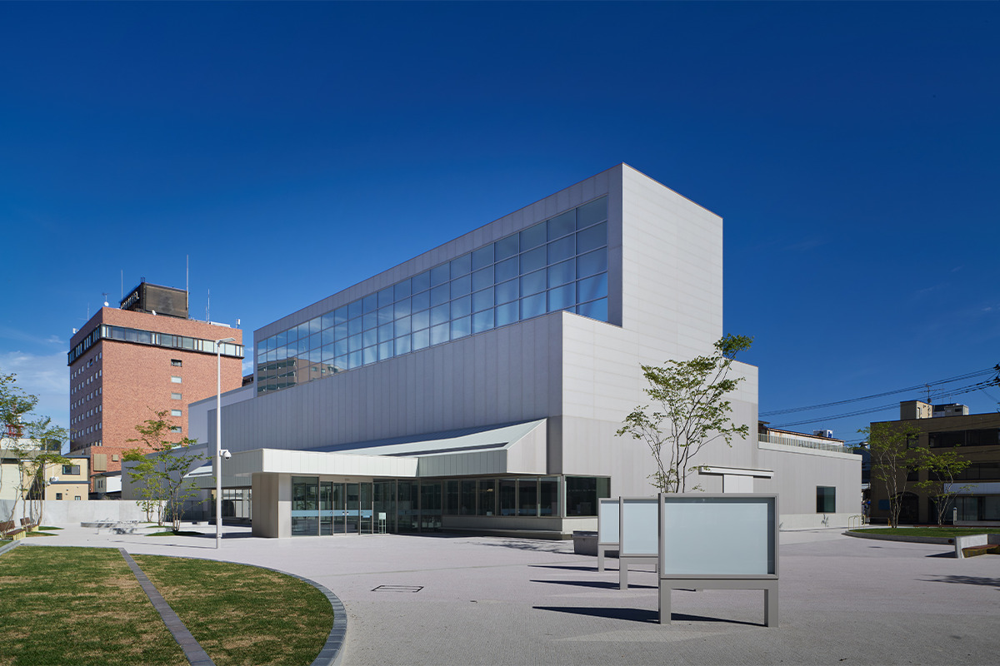
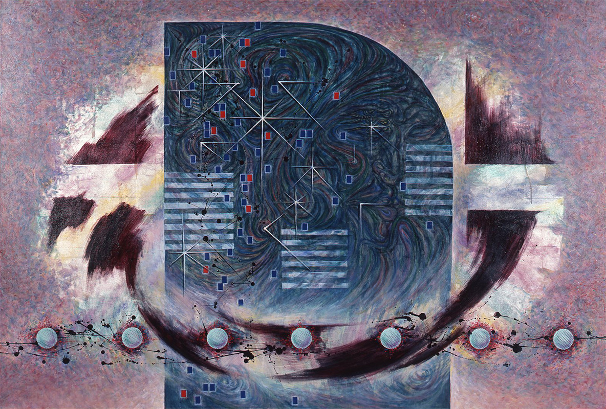
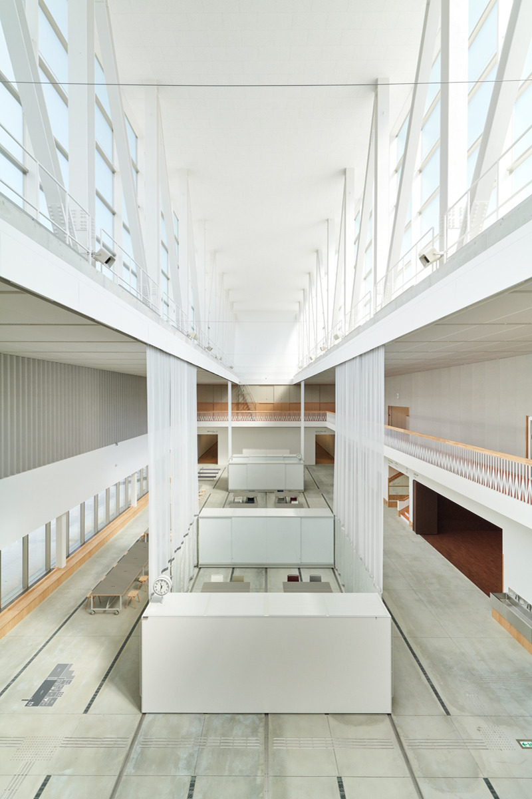
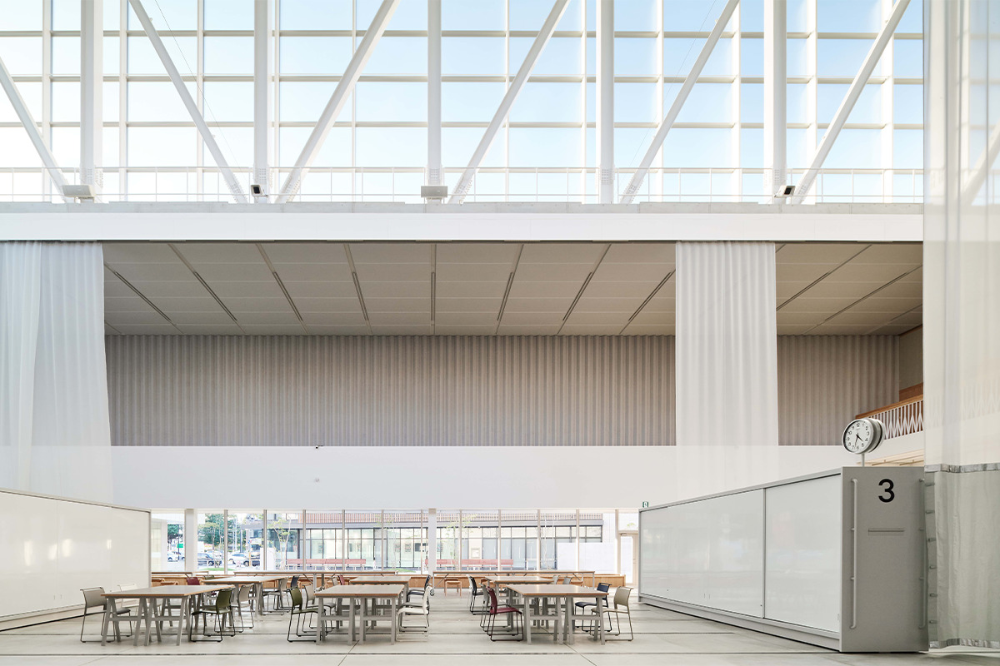
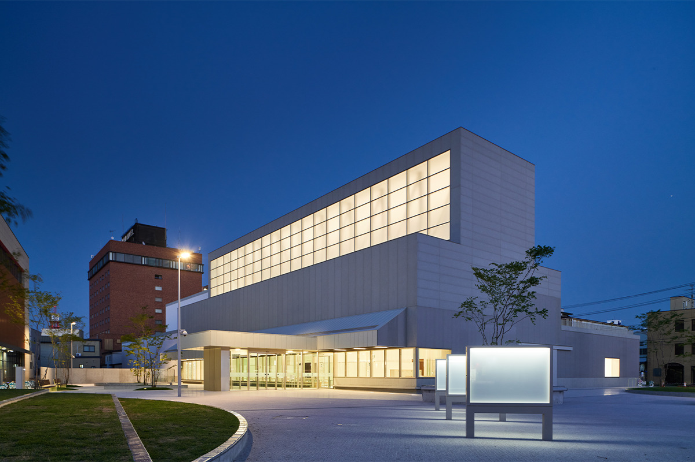
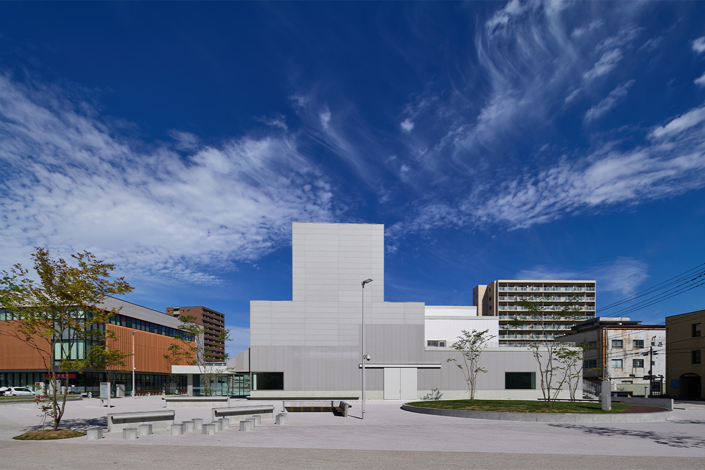

Префектура Аомори · Хатинохэ · искусство
Художественный музей Хатинохэ: арт-ферма, которая думает о городе через сто лет

В центре Хатинохэ стоит светлое здание с высоким стеклянным фонарём. Это городской художественный музей, который после обновления в 2021 году задумали как ферму: здесь сеют идеи, растят людей и собирают урожай для города, каким он будет через сто лет.
История
Музей в бывшей налоговой инспекции
Художественный музей Хатинохэ впервые открылся 21 ноября 1986 года в Бантё, квартале в центре города. Это был первый в префектуре Аомори музей искусства, созданный по закону о музеях, и работал он как филиал городского исторического музея. Под экспозицию тогда перестроили здание бывшей налоговой инспекции.
За тридцать лет, до закрытия 2 апреля 2017 года, здесь прошло множество выставок. Музей много занимался просвещением: кроме экскурсий по залам он устраивал творческие курсы, на которые приходили и дети, и взрослые.
3 ноября 2021 года музей открылся снова, уже в новом облике. Новым директором стал архитектор, профессор кафедры архитектуры университета Нихон. Девиз обновлённого музея звучит так: «Сеять семена, растить людей и создавать Хатинохэ через сто лет». Музей хочет быть похожим на ферму, где всё растёт и приносит плоды.
На открытии прошла выставка «Подарок, подарок,»: в ней участвовали 11 художников, групп и коллекций, в том числе два фотографа, и многие работы художники сделали, пока жили и работали в Хатинохэ. Отправной точкой выставки стал праздник Хатинохэ Санся тайсай: через него с разных сторон рассматривали особый для Хатинохэ дух «подарка».
Идея
Арт-ферма встреч и учёбы

Концепция музея называется «Арт-ферма встреч и учёбы». Встречи с искусством растят людей, а люди, вырастая, меняют город. Обычный музей прежде всего показывает вещи. Здесь же много места отдано людям и их занятиям, чтобы рядом с вещами рождались новые события и новые работы. Цель в том, чтобы создавать новую культуру и оживлять весь город.
Работа музея держится на трёх опорах. Выставки дают любому человеку простой повод встретиться с искусством. Проекты вместе с горожанами помогают знакомиться и учиться друг у друга. Коллекция, в основном искусство Хатинохэ, должна перейти к будущим поколениям.
Жителей, которые сами участвуют в жизни музея, здесь называют «арт-фермерами»: с помощью искусства они возделывают местное сообщество. Вместе с художниками, специалистами и сотрудниками музея они учатся и пробуют самое разное. С «партнёрами по совместному творчеству» музей ищет для города новые ценности.
Есть и программа для школ. Вместе с управлением образования, начальными, средними и старшими школами музей придумывает занятия, которые выходят за его стены и доходят до классов. С университетами и колледжами Хатинохэ он соединяет искусство с экономикой, социальной помощью и развитием города.
Архитектура
Гигантский зал и маленькие комнаты

У Хатинохэ глубокая культура, выросшая из местных обычаев и народной жизни, и необычные, красивые пейзажи. Новый музей подбирает эти богатства как семена, изучает их, чтобы они созрели, придаёт им новую ценность, чтобы они выросли, и собирает урожай: показывает и хранит так, чтобы он был доступен каждому.
Здесь исходят из того, что каждый в чём-то специалист. Горожане, сотрудники и художники могут меняться ролями, и из этого должны вырастать самые разные занятия. Чтобы люди учились друг у друга, а учёба становилась поводом что-то создать или даже сама превращалась в произведение, в музее сделали пространства двух типов.

Первое пространство называется «Гигантский зал». В нём учитель и ученик находятся в одном месте, а подвижные перегородки и мебель позволяют устроить что угодно. Второе пространство состоит из отдельных комнат, каждая под свою задачу: выставку, работу в мастерской и другое. В них можно глубоко заниматься своим делом и встретить людей из другой области. Свободно сочетая зал и комнаты, здесь можно делать, думать, собираться, знакомиться и открывать новое.
Здание спроектировал союз двух бюро: бюро архитектора Тэцуо Нисидзавы и Takaban Studio. Нисидзава, уроженец Киото 1974 года рождения, в бюро другого архитектора вёл проект Префектурального художественного музея Аомори, затем обновил галерею постоянной коллекции Национального музея современного искусства в Токио (2012) и перестроил Художественный музей Kyocera в Киото (2019). В 2021 году он получил премию Архитектурного института Японии. В команду вошли ещё два архитектора: исследователь городских интерьеров и основатель арт-резиденции для художников со всего мира.
Знак
Большая основа для будущего
Логотип музея тоже вырос из «Гигантского зала». Это широкая изогнутая чёрная фигура, которая передаёт масштаб зала, а над ней остаётся большое пустое место в форме круга. Если считать эту пустоту будущим Хатинохэ, то знак зала становится опорой, которая его держит.
Идея в том, что всё созданное в зале вместе с горожанами будет одно за другим заполнять пустое место будущего.
«Хочу, чтобы Художественный музей Хатинохэ стал большой основой, на которой будущее города будут рисовать и дальше»
автор логотипа, графический дизайнер


Художественный музей Хатинохэ
- Адрес
- префектура Аомори, Хатинохэ, Бантё, 10-4
- Телефон
- +81 178-45-8338
- Часы работы
- 10:00–19:00
- Выходные
- вторник (если это праздник, то следующий день), 31 декабря, 1 января
- Цены / Вход
- зависит от выставки
Фото: Дайти Ано.